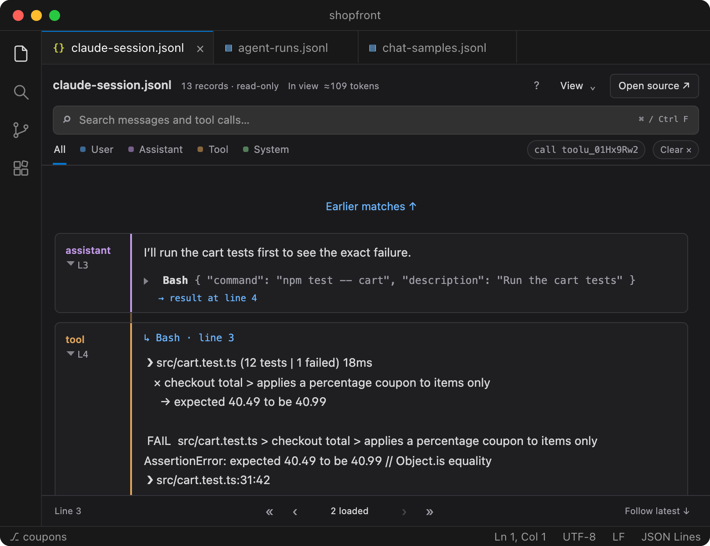
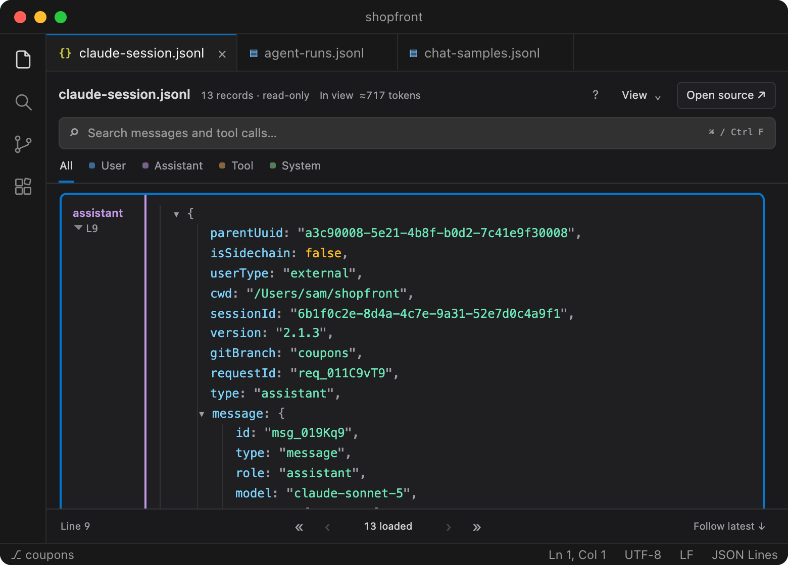
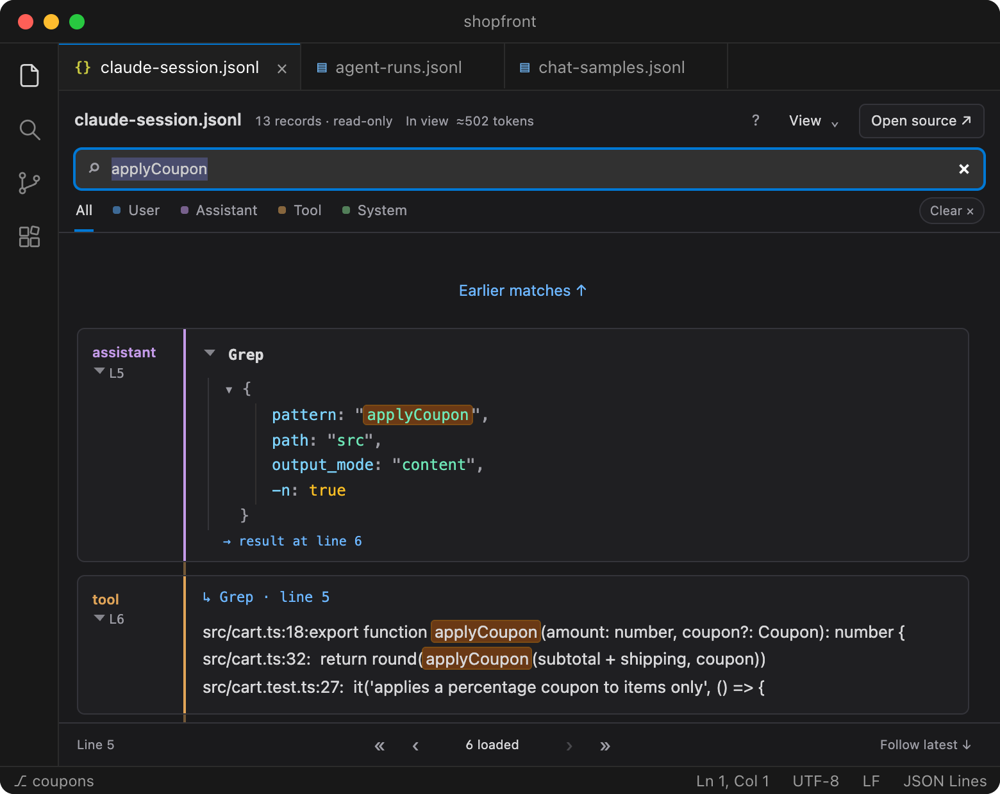
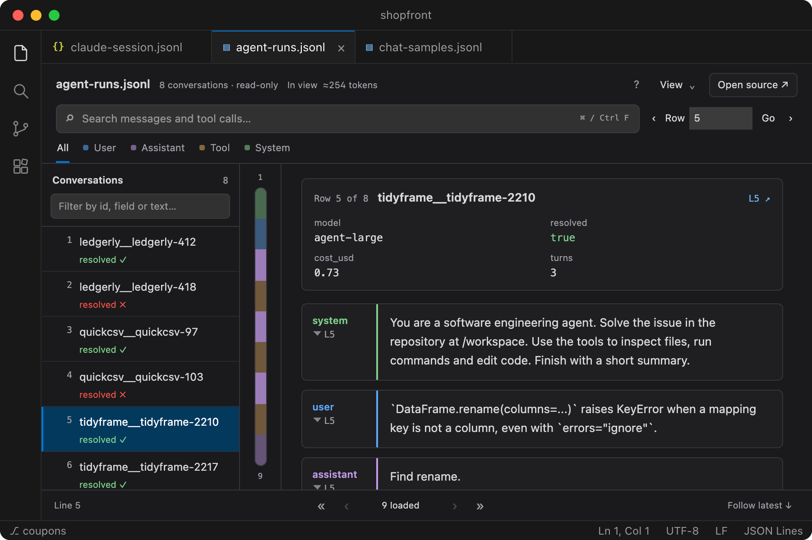
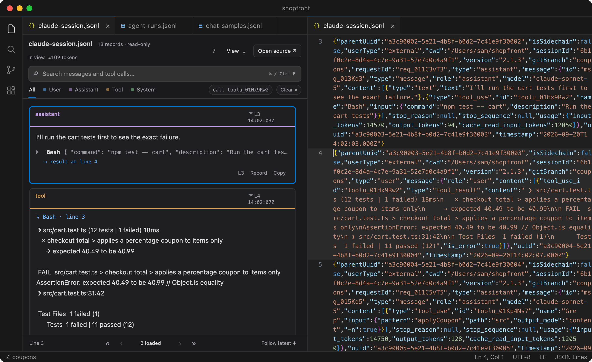

Follow each call to its result
Arguments appear as readable fields, not escaped JSON strings. Select result at line 4 to see a call next to everything it returned, even when the result arrived many steps later.
{kind=link}

Open a Claude Code session, a Codex log or a trajectory dataset from Hugging Face and see every message, tool call and result in order. Check any step against the raw JSON. Your data never leaves your machine.
Free and MIT licensed. Works offline in VS Code 1.96 or newer on Windows, macOS and Linux.

Reads the logs your tools already write
Each step shows who said it, when, and which line of the file it came from. Tool calls are tied to their results, reasoning folds away until you want it, and steps stay in the order they were recorded.
Arguments appear as readable fields, not escaped JSON strings. Select result at line 4 to see a call next to everything it returned, even when the result arrived many steps later.

The formatting never hides anything. Switch any message to the exact JSON record it came from, or open its line in the file beside the preview. Records Unroll doesn’t recognize stay available as raw events.

Search messages, tool names, arguments and outputs, and filter by role. Matches are highlighted inside formatted arguments and results. On a long log, search covers the whole file and you can stop it at any time.

When each row is a full run, as in SWE-agent, OpenHands or τ-bench exports, Unroll lists every run with its outcome. Filter by id, field or message text, see each run’s model, reward or cost at the top, and step through runs with ⇧J and ⇧K.

Leave a session open while the agent works. New steps appear as they’re written; press F to follow the latest.
In benchmarks on a laptop, a 110 MB log with 110,000 messages shows its first messages in under a second, and jumping to the end is near-instant. Unroll reads what you scroll to, not the whole file.
J/K between steps, N/P between tool calls, R for the raw record. Press ? for the rest.
Spot-check fine-tuning or preference data: pick a conversation and read its turns with Markdown, tables and code rendered.
Unroll opens beside your file, never instead of it. Every message links to its line, so you can switch between the readable view and the raw JSONL at any point.

Open a Claude Code session, trace a failing test to its cause, check the raw record, search, watch new steps arrive, then review a dataset of agent runs. Recorded with the extension’s own viewer and made-up example files.
No sound. On-screen notes explain each step, and captions and a text transcript are available.
Open .jsonl, .ndjson or .json files. Unroll recognizes these formats, and still shows anything else as raw JSON events.
Log formats change between tool versions, so a file may only partly match. If yours doesn’t read well, send a small sanitized sample. Parquet isn’t supported. Format details
Unroll is free and works with desktop VS Code 1.96 or newer. Until the Marketplace listing is live, install it from a VSIX file on GitHub. It takes about a minute.
Get unroll-<version>.vsix from the latest GitHub release.
In the Extensions view, open the menu and choose
Right-click a .jsonl, .ndjson or .json file and choose . Your usual text editor stays the default.
code --install-extension unroll-<version>.vsixTraces often hold source code, file paths, credentials and unreleased prompts. Unroll reads the file you open and displays it. That’s all it does. Privacy details
Or try the made-up example files used on this page. If one of your files doesn’t display correctly, a small sanitized sample in an issue is the fastest way to get it supported.
{kind=link}
{kind=link}
{kind=link}